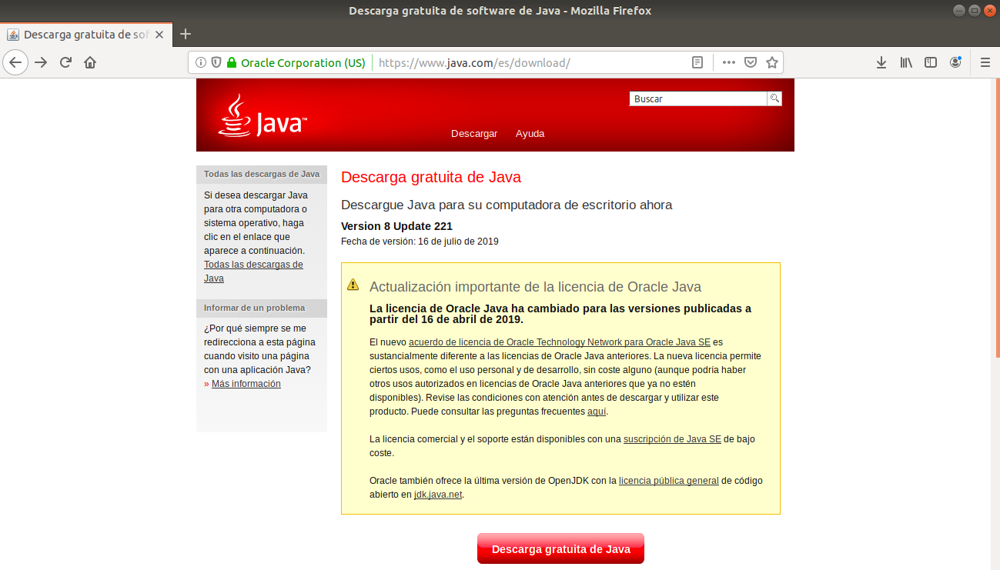
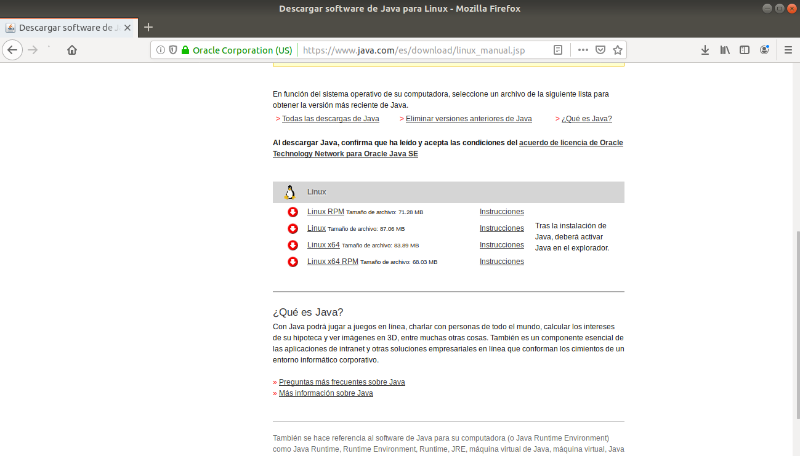
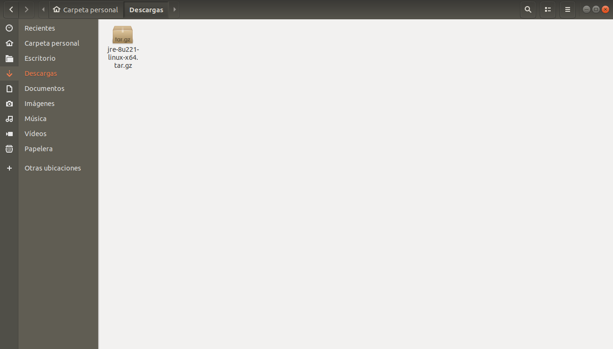
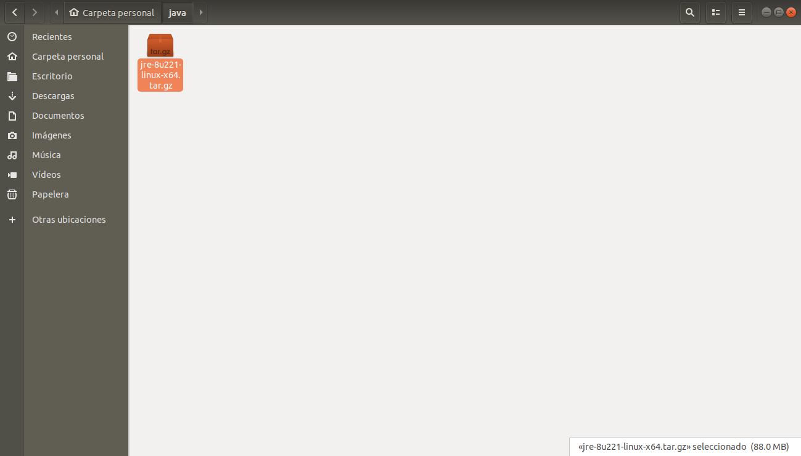
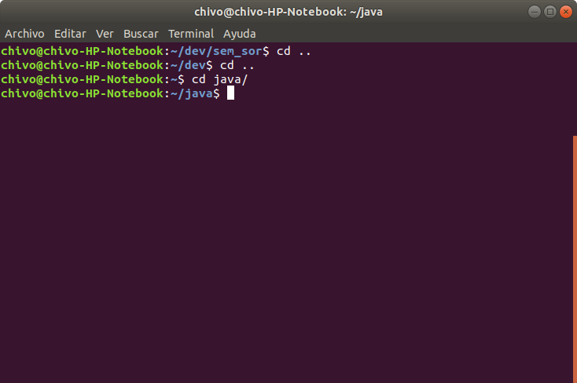
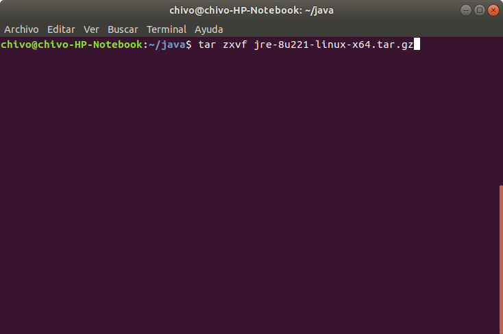
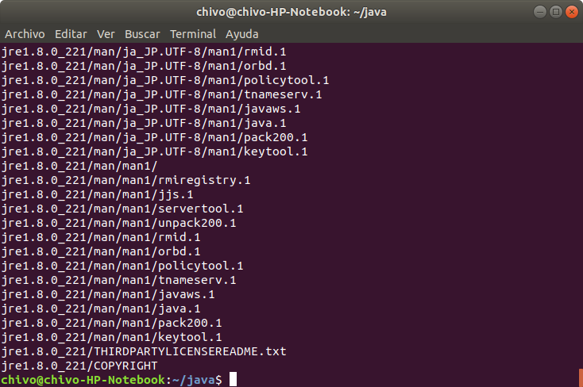
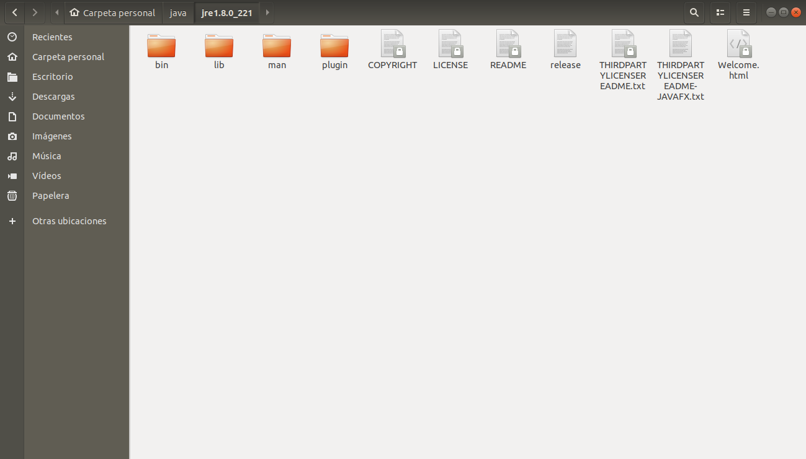

Actividad 04
Objetivo: Instalar Java y desarrollar un punto de venta básico que funcione en Windows y Linux
Windows
Linux
Windows
Java es un lenguaje de programación y una plataforma informática comercializada por primera vez en 1995 por Sun Microsystems. Hay muchas aplicaciones y sitios web que no funcionarán a menos que tenga Java instalado y cada día se crean más. Java es rápido, seguro y fiable. Desde portátiles hasta centros de datos, desde consolas para juegos hasta súper computadoras, desde teléfonos móviles hasta Internet, Java está en todas partes.
Para instalar Java en Windows, existe un instalador que nos permite instalarlo de manera sencilla.
Lo primero que tenemos que hacer es descargarlo, entrando al siguiente link, y dando click en "Aceptar e iniciar descarga gratuita"
Una vez que le demos click, nos descargará un instalador, esperamos que termine de descargarse y damos click en el para abrirlo

Una vez abierto el instalador, nos señalará ciertas condiciones, solo damos click en "Instalar"
Ya que demos click en "Instalar", nos mostrará una barra de carga donde descargará la versión más reciente de Java
Una vez descargado, comenzará la instalación de Java
La instalación de Java habrá finalizado cuando la barra de progreso desaparezca
Si por alguna razón ya tenías instalada alguna versión obsoleta de Java, el instalador te mostrará las versiones de Java obsoletas y puedes tener la opción de desinstalarlas (Recomendado)
Una vez desinstalado las versiones obsoletas, nos señalará lo que se ha desinstalado y daremos click en "Siguiente"
En la siguiente pantalla nos mostrará que Java se ha instalado de manera correcta y que ya podemos cerrar el instalador. Damos click en "Cerrar"
Linux
Java es un lenguaje de programación y una plataforma informática comercializada por primera vez en 1995 por Sun Microsystems. Hay muchas aplicaciones y sitios web que no funcionarán a menos que tenga Java instalado y cada día se crean más. Java es rápido, seguro y fiable. Desde portátiles hasta centros de datos, desde consolas para juegos hasta súper computadoras, desde teléfonos móviles hasta Internet, Java está en todas partes.
Para instalar Java en Linux, existe un paquete que podemos extraer directamente de la página oficial
Lo primero que tenemos que hacer es ir al siguiente linkY elegir el paquete que mejor nos convenga, en este caso elegiremos 'Linux x64'
Una vez descargado, nos iremos a la carpeta en la que se ubica
Ya que estemos ahí, moveremos el paquete a la dirección /java/
Si no se encuentra la carpeta, la creamos
Una vez ubicado el paquete en esa dirección, procederemos a abrir la terminal y posicionarnos en la misma dirección
Ya que estemos ahí, procederemos a escribir el siguiente comando
Daremos enter y se desempaquetará el archivo
Una vez desempaquetados nos meteremos a la carpeta que se desempaquetó y nos mostrará los archivos. Esos archivos son los que harán funcionar Java
